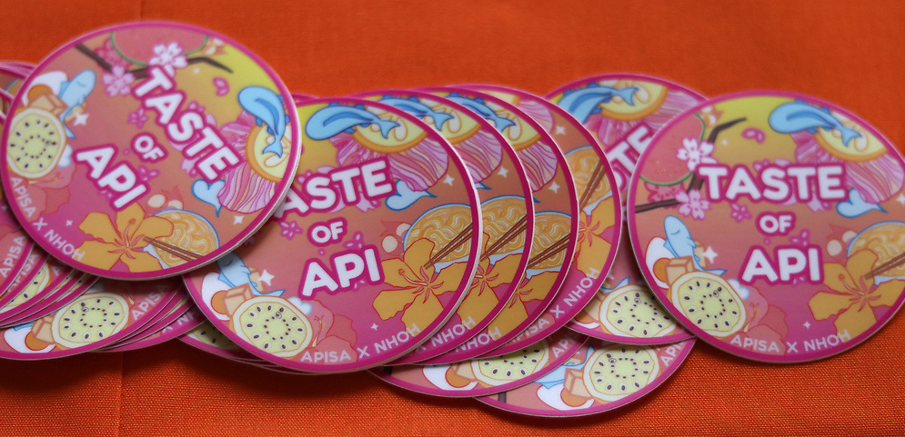
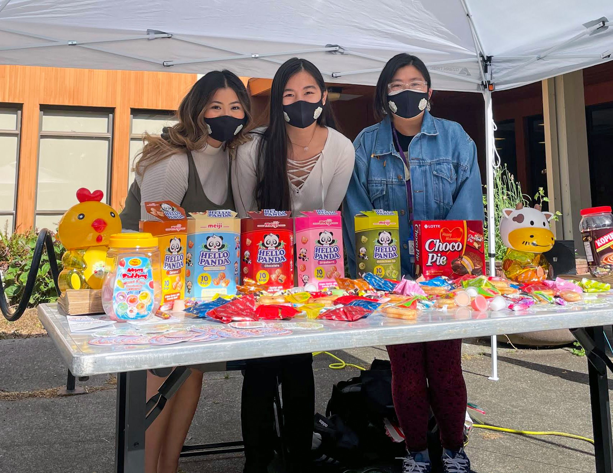
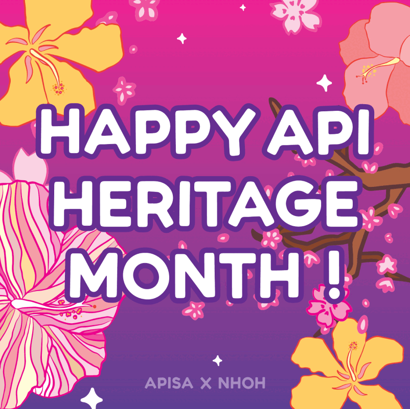
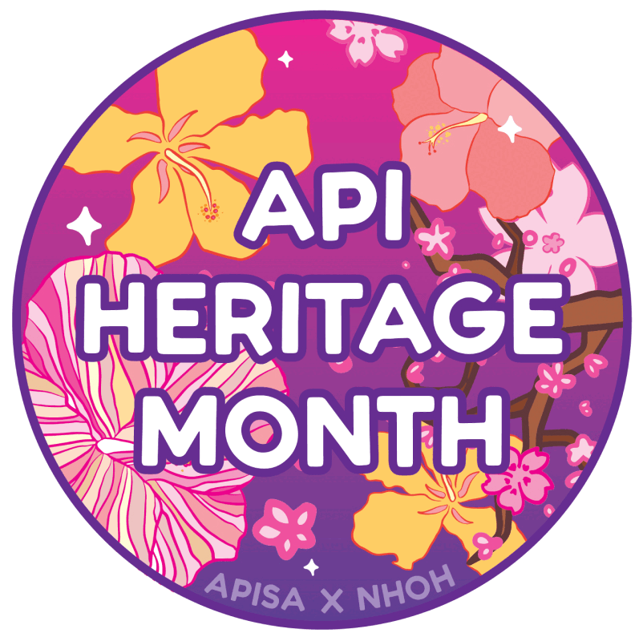
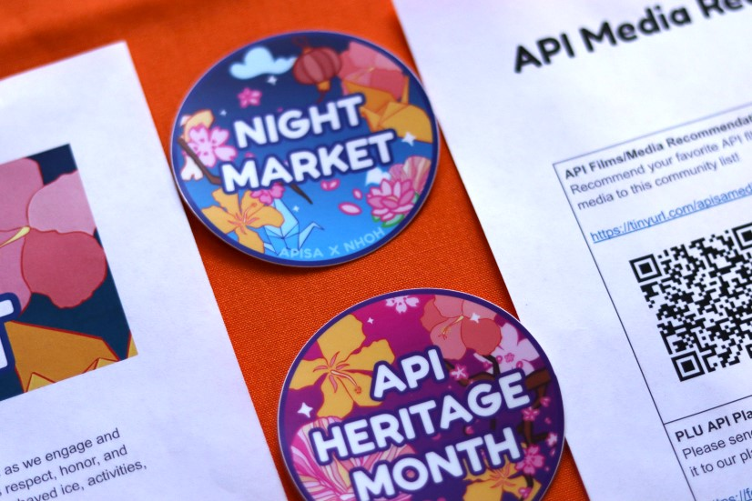
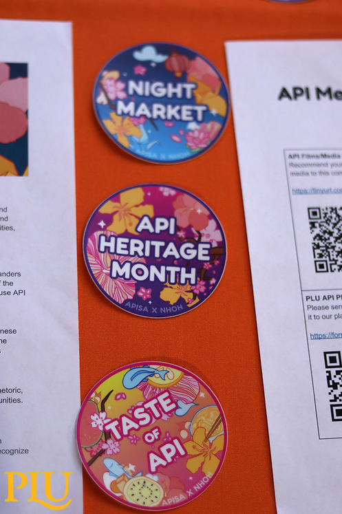
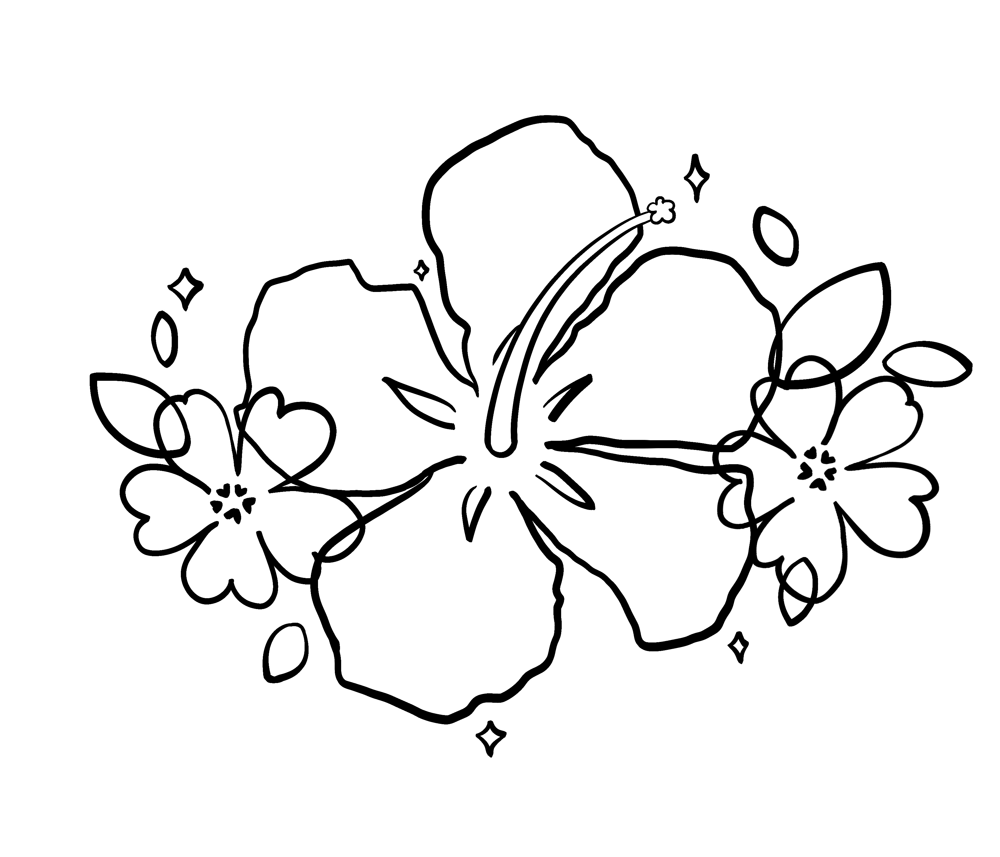

Asian Pacific Islander Proud 🌺
In high school, I was an active member of a Japanese club, where I found community, learned how to dance, and made lasting memories. Transitioning to college, I was looking for a similar community and found that in the Asian Pacific Islandar Student Association. As a member and later executive officer in this student group, I contributed to on-campus activism, planned two large campus-wide events that shared Asian cultures, found my people, and led rebranding and graphic design efforts.
Client
Asian Pacific Islander Student Association (APISA) and Nā Hoaloha O Hawai’i (NHOH)
Tools
InDesign, Illustrator, Photoshop, After Effects, Procreate
Time
September 2020 - December 2022
★ Spreading Awareness of Anti-Asian Hate Crimes
In 2021, there was a drastic spike of hate crimes targeting Asian Americans, and in particular our elders, that spanned across the country as a result of the racist scapegoating of China for the spread of COVID-19. In response to the tragedies, an intersectional group of students formed to write a collective letter addressing the issue and calling in our faculty and staff members to the conversation. After the letter sparked campus-wide awareness and discussion, APISA boothed a table outside of the dining hall to pass out further information and art to spread the message further.



★ Celebration of AAPI Heritage Month
In 2022, our club efforts shifted as campus was re-opening further after shutting down during the pandemic. AAPI Heritage Month is celebrated every year as May, which is also the last month of the school semester at PLU. The executive boards and committees of APISA and NHOH planned Taste of API and Night Market to honor API heritages on campus. Taste of API involved changing the menu for a week to various API dishes and the Night Market was a festive fair complete with games, activities, and a shaved ice truck for an evening full of community and love.






★ APISA Logo Rebranding
For the redesigned logo, I centered a hibiscus flower in between two small cherry blossoms to represent the Asian and Pacific Islander communities that APISA serves.
